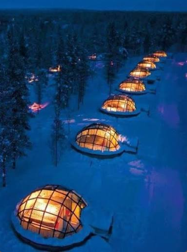
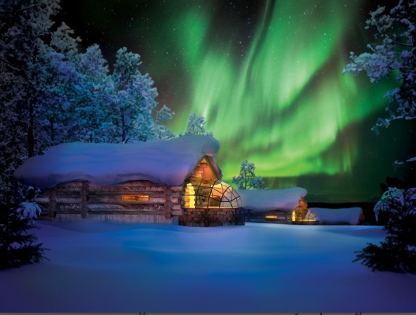
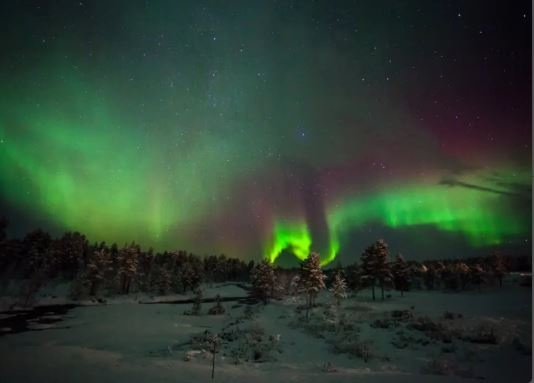

A glass igloo at the original Kakslauttanen Arctic Resort. The roof is made of special
thermal glass, so the cold stays out and the whole sky stays in. We can watch the aurora
drift overhead from the warmth of our own bed — with a private sauna and a fireplace just for us.
住进卡克斯劳塔宁的玻璃穹顶屋。屋顶是特制的保温玻璃 —— 寒冷被挡在外面，整片星空留在里面。我们可以躺在温暖的床上，看极光在头顶流动，还有只属于我们的私人桑拿和壁炉。
From home in Shenzhen, up over the top of the world to Finland, then a short hop north
into Lapland — and the last stretch through snowy forest to the resort.
从深圳的家出发，飞越世界之巅来到芬兰，再向北一小段进入拉普兰 —— 最后穿过白雪森林，抵达度假村。
Hunt the aurora on a guided night tour, glide through silver forest behind a team of huskies,
meet the reindeer, warm up in the world's largest smoke sauna, and let the quiet of the Arctic
wrap all the way around us.
跟着向导在夜里追极光，乘着哈士奇雪橇穿过银白森林，去看驯鹿，在世界最大的烟桑拿里取暖，让北极的宁静把我们温柔包裹。
Mid-October sits right inside the northern-lights season, when the nights have grown long
and dark enough for the sky to dance. Some nights it whispers, some nights it blazes —
and we'll be there for whatever it gives us.
十月中正是北极光的季节，夜晚已经够长够暗，天空开始起舞。有些夜晚它轻轻低语，有些夜晚它熊熊燃烧 —— 无论它给我们什么，我们都在那里。